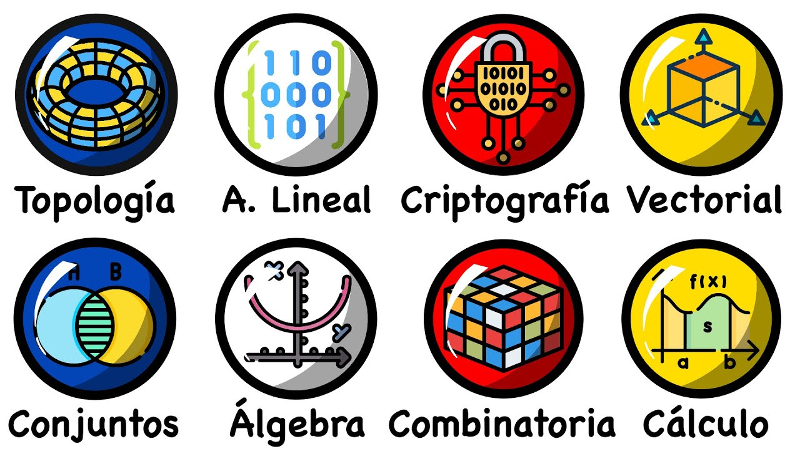

Matemáticas
Las matemáticas son el andamio invisible de todo. No se trata solo de números, sino de la lógica, la estructura y los patrones que construyen el mundo. Es mi campo de batalla favorito, donde cada problema resuelto es una victoria de la razón.
